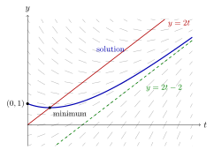
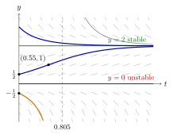
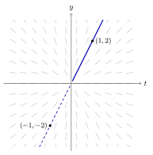
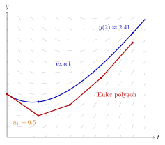
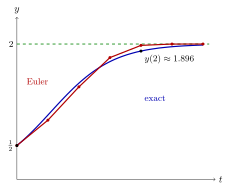
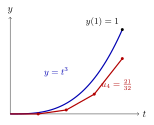
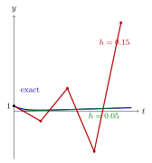
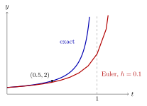

9.2 Direction Fields and Euler's Method¶
Guiding question
In Section 9.1 an initial value problem \(y'=F(t,y)\), \(y(t_0)=y_0\) was solved only when the right side did not involve \(y\), or when somebody handed us a formula to check. Most equations have no formula we can find by integrating. Yet the equation itself says something very concrete: at every point \((t,y)\) of a solution curve, the slope of the curve is \(F(t,y)\). Draw that slope at many points and you have a picture of all solutions at once (the direction field); follow the slopes in small straight steps and you have a way to compute a solution (Euler’s method). This section develops both ideas, shows how to read the long-term behavior of solutions from the field, and then asks the honest question: how wrong is Euler’s method, and when does it fail? We prove the error results that can be proved with the tools of this course: Euler’s method for \(y'=f(t)\) is the Left Rule of Section 8.8, an exact formula and an error bound for \(y'=ay+b\), a general error theorem, and the step-size restriction that stiff equations impose.
By the end of this section you should be able to:
-
sketch a direction field using nullclines and isoclines, and sketch solution curves that follow it;
-
find the equilibrium solutions of \(y'=F(y)\) and decide, from the sign of \(F\), which are stable;
-
carry out Euler’s method by hand, make a table of steps, and draw the Euler polygon;
-
compare Euler’s method with an exact solution, and predict what halving the step does to the error;
-
use the error theorems to choose a step size, and recognize blow-up and step-size instability;
-
prove each theorem of this section.
Direction fields¶
Take a first-order equation \(y'(t)=F(t,y)\), as in Section 9.1. If \(y\) is a solution on an interval \(I\), then for every \(t\) in \(I\) the point \((t,y(t))\) of its graph has tangent slope \(y'(t)=F(t,y(t))\). So the right side \(F\) tells us the slope of every solution curve at every point it passes through, without our knowing the solution.
Definition 9.2.1: Direction field, solution curve
Let \(F\) be defined on a region \(D\) of the \(ty\)-plane. The direction field (or slope field) of \(y'=F(t,y)\) is the assignment to each point \((t,y)\) of \(D\) of the number \(F(t,y)\), drawn as a short line segment through \((t,y)\) with that slope. A solution curve is the graph of a solution of the equation; it is tangent to the segment at each of its points.
The field depends only on \(F\). It does not know about any initial condition: the initial condition just chooses which curve to follow. In Section 9.1 we quoted the existence and uniqueness theorem for \(y'=F(t,y)\) without proof, because it is beyond this course. We use it in the following form, and every equation in this section satisfies its hypothesis.
Existence and uniqueness (stated without proof)
Suppose \(F\) and \(\partial F/\partial y\) are continuous on a region \(D\) and \((t_1,y_1)\) is in the interior of \(D\). Then there is a solution of \(y'=F(t,y)\) with \(y(t_1)=y_1\), and any two solutions through \((t_1,y_1)\) agree on every interval containing \(t_1\) on which both are defined. This is the precise form of the “well-behaved” statement in Section 9.1. Its proof belongs to a course in differential equations; the example \(y'=3y^{2/3}\) of Section 9.1 shows that some hypothesis is needed.
In particular two different solution curves cannot cross or touch in the interior of \(D\), because they would be two solutions through the same point (Pause and think 9.2.1).
Definition 9.2.2: Nullcline and isocline
The isocline of slope \(m\) for \(y'=F(t,y)\) is the set of points where \(F(t,y)=m\); along it all segments of the field are parallel with slope \(m\). The isocline of slope \(0\) is called the nullcline: the segments there are horizontal.
Isoclines are the efficient way to draw a field by hand: sketch a few curves \(F(t,y)=m\) for \(m=0,\pm1,\pm2,\dots\) and put equal-slope segments along each.
Procedure 9.2.3: Sketching a direction field and solution curves
For \(y'=F(t,y)\):
-
Find the nullcline \(F(t,y)=0\) and draw horizontal segments on it.
-
Find the regions where \(F>0\) (solution curves rise) and \(F<0\) (they fall); the nullcline separates them. Note where \(F\) is undefined: there is no segment there.
-
Draw a few isoclines \(F(t,y)=m\), or compute \(F\) on a grid, and draw segments of slope \(m\) along each.
-
To follow an initial condition, start at \((t_0,y_0)\) and draw a curve tangent to the segments, rising where \(F>0\), falling where \(F<0\), level where it crosses the nullcline, and never crossing another solution curve.
-
Check the picture against the signs found in step 2.
Example 9.2.4: Field, nullcline and isoclines of \(y'=2t-y\)
(a) Find the slope at \((0,1)\), \((1,0)\), \((1,2)\), \((2,1)\) and \((2,5)\). (b) Find the nullcline and the isoclines, and decide where solutions rise and fall. (c) Show that the isocline \(y=2t-2\) is itself a solution curve. (d) Sketch the field and the solution with \(y(0)=1\).
Solution. (a) Here \(F(t,y)=2t-y\). At \((0,1)\) the slope is \(0-1=-1\); at \((1,0)\) it is \(2\); at \((1,2)\) it is \(2-2=0\); at \((2,1)\) it is \(4-1=3\); at \((2,5)\) it is \(4-5=-1\). (b) The isocline of slope \(m\) is \(2t-y=m\), that is \(y=2t-m\): a line of slope \(2\) for every \(m\) (a family of parallel lines). The nullcline \(m=0\) is \(y=2t\). Below it (\(y<2t\)) we have \(F>0\) and solutions rise; above it (\(y>2t\)) we have \(F<0\) and they fall. (c) The isocline \(m=2\) is the line \(y=2t-2\). On it the field has slope \(2\), which is also the slope of the line itself. So the line follows the field: check directly, \(y=2t-2\) gives \(y'=2\) and \(2t-y=2t-(2t-2)=2\). It is a solution on \((-\infty,\infty)\). (d) The point \((0,1)\) lies above the nullcline \(y=2t\) (because \(1>0\)), where \(F<0\), so the solution first falls. It also lies above the solution line \(y=2t-2\) (because \(1>-2\)), and it can never cross that line (Pause and think 9.2.1), so it stays above it. A curve that falls while staying above the nullcline must reach the nullcline, where its slope is \(0\); after that it is below the nullcline, where \(F>0\), and it rises, approaching the green line from above. The exact solution confirms this: \(y=2t-2+3e^{-t}\) has \(y'=2-3e^{-t}\), and \(2t-y=2-3e^{-t}\), so the equation holds, and \(y(0)=-2+3=1\). The turning point is where \(y'=0\), that is \(e^{-t}=\frac23\), \(t=\ln\frac32\approx0.405\), at height \(y=2\ln\frac32\approx0.811\); indeed this point satisfies \(y=2t\), so it is on the nullcline.

Figure. The field of \(y'=2t-y\). Red: nullcline \(y=2t\). Green dashed: the isocline \(y=2t-2\), itself a solution. Blue: the solution with \(y(0)=1\), which falls to its minimum on the nullcline and then rises along the green line.
Knowledge Check 9.2.1: Reading the slope
For \(y'=y-t^2\): (i) find the nullcline; (ii) find the sign of the slope at \((1,2)\) and at \((1,0)\).
Autonomous equations and equilibria¶
When \(F\) does not involve \(t\), the equation \(y'=F(y)\) is called autonomous. Its field is the same along every horizontal line, so the picture is determined by the signs of \(F\). A constant function \(y=c\) with \(F(c)=0\) is a solution (its derivative is \(0=F(c)\)), called an equilibrium solution.
Theorem 9.2.5: Translation of solutions of an autonomous equation
Let \(y\) solve \(y'=F(y)\) on an interval \(I\). For every constant \(c\), the function \(y_c(t)=y(t-c)\) solves the same equation on the interval \(I+c=\{t+c:t\in I\}\). So the solution curves of an autonomous equation are horizontal translates of each other.
Proof. By the Chain Rule, \(y_c'(t)=y'(t-c)\cdot1=F(y(t-c))=F(y_c(t))\) for every \(t-c\) in \(I\). ◻ ∎
The next theorem says what we should see in the field. It turns the sign chart of \(F\) into rigorous statements about solutions: between two equilibria a solution is trapped and monotone, and if it lives for all large \(t\) it runs into an equilibrium. It uses uniqueness (the Remark above) and the fact that a monotone function that is bounded has a limit (Theorem C.3 of the appendix).
Theorem 9.2.6: Solutions of \(y'=F(y)\) between equilibria
Let \(F\) and \(F'\) be continuous on an open interval \(J\), and let \(a<b\) be zeros of \(F\) in \(J\) with \(F\ne0\) on \((a,b)\). Let \(y\) be a solution of \(y'=F(y)\) on an interval \(I\) with \(a<y(t_0)<b\) for some \(t_0\in I\).
(a) \(a<y(t)<b\) for every \(t\in I\).
(b) \(y\) is strictly increasing on \(I\) if \(F>0\) on \((a,b)\), and strictly decreasing if \(F<0\) on \((a,b)\).
(c) If \(I\) contains \([t_0,\infty)\), then \(y(t)\to b\) as \(t\to\infty\) in the increasing case, and \(y(t)\to a\) in the decreasing case.
Proof. (a) Suppose \(y(s)\le a\) for some \(s\in I\). Since \(y(t_0)>a\) and \(y\) is continuous, the Intermediate Value Theorem gives \(t_1\) between \(t_0\) and \(s\) with \(y(t_1)=a\). The constant function \(a\) also solves the equation, because \(F(a)=0\), and takes the value \(a\) at \(t_1\). By uniqueness the two solutions agree on every interval containing \(t_1\) on which both are defined, in particular at \(t_0\): \(y(t_0)=a\), contradicting \(y(t_0)>a\). The same argument excludes \(y(s)\ge b\). (b) By (a), \(y(t)\in(a,b)\) for all \(t\), so \(F(y(t))\ne0\). The function \(t\mapsto F(y(t))\) is continuous and never zero on the interval \(I\), so by the Intermediate Value Theorem it has one sign, the sign of \(F\) on \((a,b)\). Hence \(y'=F(y)>0\) on \(I\) (or \(<0\)), and by the Mean Value Theorem \(y\) is strictly increasing (or decreasing). (c) Increasing case. By (a) and (b), \(y\) is increasing and bounded above by \(b\) on \([t_0,\infty)\), so it has a limit \(L\le b\) (Theorem C.3), and \(L>y(t_0)>a\), so \(L\in(a,b]\subset J\). Since \(F\) is continuous, \(y'(t)=F(y(t))\to F(L)\) as \(t\to\infty\). If \(L<b\), then \(F(L)>0\), so for \(t\ge t_2\) (some \(t_2\)) we have \(y'(t)\ge\frac12F(L)=:\gamma>0\), and by the Mean Value Theorem \(y(t)\ge y(t_2)+\gamma(t-t_2)\to\infty\), contradicting \(y<b\). So \(L=b\). In the decreasing case apply this to \(-y\) and \(-F(-\,\cdot\,)\), or repeat the argument with the inequalities reversed. ◻ ∎
An equilibrium \(c\) is stable if solutions that start near it on both sides approach it as \(t\to\infty\), and unstable if solutions starting near it (on at least one side) move away. By Theorem 9.2.6, the sign of \(F\) on the two sides of \(c\) decides: if \(F>0\) just below \(c\) and \(F<0\) just above it, \(c\) is stable; if the signs are reversed, it is unstable.
Example 9.2.7: Equilibria, sign chart and curves for \(y'=y(2-y)\)
(a) Find the equilibria, classify them, and describe the solutions with \(y(0)=\frac12\), \(y(0)=3\) and \(y(0)=-\frac12\). (b) Check that \(y=\dfrac{2}{1+Ce^{-2t}}\) is a family of solutions, and use it to find the solutions of (a) and their domains.
Solution. (a) \(F(y)=y(2-y)=0\) at \(y=0\) and \(y=2\): two equilibrium solutions. The sign of \(F\): for \(y<0\) both factors have opposite signs, \(y<0\) and \(2-y>0\), so \(F<0\); for \(0<y<2\) both factors are positive, \(F>0\); for \(y>2\), \(2-y<0\), so \(F<0\).
| region | \(y<0\) | \(0<y<2\) | \(y>2\) |
|---|---|---|---|
| sign of \(F\) | \(-\) | \(+\) | \(-\) |
| solutions | fall | rise | fall |
At \(y=2\): \(F>0\) below and \(F<0\) above, so \(y=2\) is stable. At \(y=0\): \(F<0\) below and \(F>0\) above, so \(y=0\) is unstable. For \(y(0)=\frac12\) the solution is trapped between \(0\) and \(2\) and rises toward \(2\) (Theorem 9.2.6). For \(y(0)=3\) it falls toward \(2\). For \(y(0)=-\frac12\) it falls away from \(0\); it is below \(0\), where \(F<0\), and Theorem 9.2.6 does not trap it (there is no equilibrium below). (b) Let \(E=e^{-2t}\), so \(E'=-2E\). Then \(y=2(1+CE)^{-1}\) and \(y'=-2(1+CE)^{-2}\,CE'=\dfrac{4CE}{(1+CE)^2}\). On the other side, \(2-y=2-\dfrac{2}{1+CE}=\dfrac{2CE}{1+CE}\), so \(y(2-y)=\dfrac2{1+CE}\cdot\dfrac{2CE}{1+CE}=\dfrac{4CE}{(1+CE)^2}\): equal. The initial condition \(y(0)=y_0\) gives \(\frac2{1+C}=y_0\), \(C=\frac2{y_0}-1\). For \(y_0=\frac12\): \(C=3\), \(y=\dfrac2{1+3e^{-2t}}\), defined for all \(t\) (the denominator is positive). For \(y_0=3\): \(C=-\frac13\), \(y=\dfrac2{1-\frac13e^{-2t}}\), defined for all \(t\ge0\) and in fact for all \(t\), since \(\frac13e^{-2t}<1\) for \(t>-\frac12\ln3\); the domain is \((-\frac12\ln3,\infty)\). For \(y_0=-\frac12\): \(C=-5\), \(y=\dfrac2{1-5e^{-2t}}\). The denominator vanishes at \(e^{-2t}=\frac15\), \(t=\frac12\ln5\approx0.805\). The solution through \((0,-\frac12)\) lives on the interval containing \(0\) on which the formula is defined, \((-\infty,\frac12\ln5)\), and it tends to \(-\infty\) as \(t\to\frac12\ln5\) from the left: it blows up in finite time, as in Section 9.1. The other branch, for \(t>\frac12\ln5\), is a different solution (coming down from \(+\infty\) toward the equilibrium \(2\)).

Figure. The field of \(y'=y(2-y)\) with solutions \(y(0)=\frac12\) and \(y(0)=3\) (blue), and \(y(0)=-\frac12\) (orange), which blows up to \(-\infty\) at \(t=\frac12\ln5\); the grey curve is the other branch of the same formula, a different solution. The inflection point \((0.55,1)\) of the lowest blue curve is where \(F\) is largest.
Pause and think 9.2.1: Why curves cannot cross
Suppose two solution curves of \(y'=F(t,y)\), with \(F\) and \(\partial F/\partial y\) continuous, met at a point \((t_1,y_1)\). Why would that contradict the Remark above? Use it to explain why a solution that starts above the line \(y=2t-2\) in Example 9.2.4 can never cross that line.
Answer and discussion
If two solution curves met at \((t_1,y_1)\), both would be solutions of the same IVP \(y(t_1)=y_1\); the Remark says that two such solutions agree on every interval around \(t_1\) where both are defined, so they would be the same curve there. For Example 9.2.4: the line \(y=2t-2\) is a solution; a solution that crossed it at some point \((t_1,y_1)\) would be a second solution through that point, which is impossible unless it is the line. So a solution that starts above the line (\(y(0)=1>-2\)) stays above it for as long as it exists.
Example 9.2.8: A field that is undefined on a line: \(y'=y/t\)
(a) Where is the field of \(y'=y/t\) defined? What are the isoclines? (b) Show that every function \(y=Ct\) is a solution on \((0,\infty)\) and on \((-\infty,0)\). (c) Solve the IVP \(y(1)=2\) and give the domain of the solution, and say what happens at \(t=0\).
Solution. (a) \(F(t,y)=y/t\) is undefined for \(t=0\): the field has no segments on the \(y\)-axis. For \(t\ne0\) the isocline of slope \(m\) is \(y/t=m\), that is \(y=mt\), a line through the origin (without the origin itself): the isoclines are rays, and the slope along each ray is constant. The nullcline is \(y=0\) (the \(t\)-axis). (b) For \(y=Ct\) we have \(y'=C\) and \(y/t=Ct/t=C\) for \(t\ne0\). So \(y=Ct\) solves the equation on any interval not containing \(0\). Each ray \(y=mt\) has slope \(m\), equal to the field slope along it: every isocline is a solution curve, as in Example 9.2.4(c). (c) \(y(1)=C=2\) gives \(y=2t\). The equation is not defined at \(t=0\), so a solution must lie on an interval where \(t\ne0\); the initial point \(t=1\) is positive, so the domain is \((0,\infty)\). The left half \(y=2t\), \(t<0\), is a different solution (it is the solution of \(y(-1)=-2\)). So the IVP \(y(1)=2\) has exactly one solution on \((0,\infty)\), even though the formula \(y=2t\) makes sense on all of \(\R\), and all the lines \(y=Ct\) pass through the same point \((0,0)\), where the field is not defined: the existence and uniqueness theorem has nothing to say there. (The IVP \(y(0)=0\) is not even posed, since \(F(0,0)\) is undefined.)

Figure. The field of \(y'=y/t\): no segments on the \(y\)-axis. Solid blue: the solution of \(y(1)=2\), on \((0,\infty)\). Dashed: the solution of \(y(-1)=-2\) on \((-\infty,0)\).
Euler’s method¶
A direction field is a picture. To get numbers we follow the field step by step. Let \(y\) solve \(y'=F(t,y)\), \(y(t_0)=y_0\). By linear approximation (Calculus I), for a small step \(h>0\) the tangent line at \((t_0,y_0)\) stays close to the curve:
The slope \(y'(t_0)\) is known because the equation gives it. Call the right side \(u_1\); it is our approximation to \(y(t_1)\), where \(t_1=t_0+h\). Now repeat from the new point \((t_1,u_1)\): we do not know the solution through \((t_0,y_0)\) at \(t_1\) exactly, but the equation tells us the slope of the solution curve that does pass through \((t_1,u_1)\), namely \(F(t_1,u_1)\), and we follow that slope for another step. This is the idea of Leonhard Euler.
Definition 9.2.9: Euler’s method
Let \(y'=F(t,y)\), \(y(t_0)=y_0\), and let \(h>0\) be the step size. Put \(t_k=t_0+kh\) for \(k=0,1,2,\dots\) Euler’s method produces numbers \(u_0,u_1,u_2,\dots\) by
The number \(u_k\) is the approximation to \(y(t_k)\). The Euler polygon is the piecewise linear graph through the points \((t_0,u_0),(t_1,u_1),\dots\); on \([t_k,t_{k+1}]\) its slope is \(F(t_k,u_k)\), the field slope at the left end. To reach a final time \(T\) we take \(N\) steps with \(h=(T-t_0)/N\), so \(k\) runs from \(0\) to \(N-1\) in the formula and the last value is \(u_N\). (The book writes \(\Delta t\) for \(h\).)
Procedure 9.2.10: Euler’s method by hand
-
Choose \(h\) or \(N\) and list \(t_k=t_0+kh\). Start the table with \(u_0=y_0\).
-
For each \(k\), compute the slope \(F(t_k,u_k)\) from the current row; multiply by \(h\); add to \(u_k\) to get \(u_{k+1}\).
-
Keep several more digits than you will report; rounding errors are small next to the method’s error, but they add up.
-
If an exact solution is known, add columns for \(y(t_k)\) and the error \(e_k=u_k-y(t_k)\).
Example 9.2.11: Euler’s method for \(y'=2t-y\), \(y(0)=1\)
Apply Euler’s method with \(h=\frac12\) on \([0,2]\) and compare with the exact solution \(y=2t-2+3e^{-t}\).
Solution. Here \(F(t,y)=2t-y\), \(N=4\) and \(t_k=\frac k2\). Step by step:
The exact values come from \(y=2t-2+3e^{-t}\) (Example 9.2.4); for instance \(y(\frac12)=-1+3e^{-1/2}\approx0.8196\). The table collects everything.
| \(k\) | \(t_k\) | \(u_k\) | \(F(t_k,u_k)\) | \(y(t_k)\) | \(e_k=u_k-y(t_k)\) |
|---|---|---|---|---|---|
| \(0\) | \(0.0\) | \(1.0000\) | \(-1.0000\) | \(1.0000\) | \(0.0000\) |
| \(1\) | \(0.5\) | \(0.5000\) | \(0.5000\) | \(0.8196\) | \(-0.3196\) |
| \(2\) | \(1.0\) | \(0.7500\) | \(1.2500\) | \(1.1036\) | \(-0.3536\) |
| \(3\) | \(1.5\) | \(1.3750\) | \(1.6250\) | \(1.6694\) | \(-0.2944\) |
| \(4\) | \(2.0\) | \(2.1875\) | \(1.8125\) | \(2.4060\) | \(-0.2185\) |
The Euler values are all below the exact solution (the error is negative). The figure below shows why: the first segment is the tangent at \((0,1)\), with slope \(-1\); the solution curve then curves upward (it is concave up, \(y''=3e^{-t}>0\)), so every tangent line lies below it, and each step starts a little too low. The first step ends at \((0.5,0.5)\) while the curve is at \((0.5,0.82)\): this gap, \(0.32\), is the local error of the first step.

Figure. The Euler polygon (red) for \(y'=2t-y\), \(h=\frac12\), against the exact solution (blue) and the field. The dashed first segment is the tangent line at \((0,1)\).
Example 9.2.12: Euler’s method for a nonlinear equation: \(y'=y(2-y)\), \(y(0)=\frac12\)
Apply Euler’s method with \(h=\frac12\) on \([0,3]\) and compare with the exact solution \(y=\dfrac2{1+3e^{-2t}}\) of Example 9.2.7.
Solution. \(F(t,y)=y(2-y)\) does not involve \(t\); \(N=6\). The first steps:
and so on. The full table:
| \(k\) | \(t_k\) | \(u_k\) | \(F(t_k,u_k)\) | \(y(t_k)\) | \(e_k=u_k-y(t_k)\) |
|---|---|---|---|---|---|
| \(0\) | \(0.0\) | \(0.5000\) | \(0.7500\) | \(0.5000\) | \(0.0000\) |
| \(1\) | \(0.5\) | \(0.8750\) | \(0.9844\) | \(0.9507\) | \(-0.0757\) |
| \(2\) | \(1.0\) | \(1.3672\) | \(0.8652\) | \(1.4225\) | \(-0.0553\) |
| \(3\) | \(1.5\) | \(1.7998\) | \(0.3604\) | \(1.7401\) | \(0.0597\) |
| \(4\) | \(2.0\) | \(1.9800\) | \(0.0397\) | \(1.8958\) | \(0.0841\) |
| \(5\) | \(2.5\) | \(1.9998\) | \(0.0004\) | \(1.9604\) | \(0.0394\) |
| \(6\) | \(3.0\) | \(2.0000\) | \(0.0000\) | \(1.9852\) | \(0.0148\) |
The Euler values rise toward \(2\) and level off, as the sign chart predicts: the equilibrium \(y=2\) is stable. The error is negative at first and changes sign between \(t=1\) and \(t=1.5\). The early steps lie on the concave-up part of the curve (up to its inflection point \(t=\frac12\ln3\approx0.55\)), where each tangent step falls short; for larger \(t\) the curve is concave down and each tangent step overshoots. The global error is the accumulation of such local errors, so it takes a while to change sign. The largest error is \(0.084\) at \(t=2\), about \(4.4\%\) of the exact value \(1.896\).

Figure. Euler’s method with \(h=\frac12\) for \(y'=y(2-y)\), \(y(0)=\frac12\) (red polygon) and the exact solution (blue).
Pause and think 9.2.2: Which side is Euler on?
In Example 9.2.11 the Euler values are below the exact ones; in Example 9.2.12 they are first below and then above. Use the sign of \(y''\) (concavity) and the fact that a tangent line lies below a concave-up curve and above a concave-down one to explain this. What does the sign of the error at the first step tell you about \(y''(t_0)\)?
Answer and discussion
A tangent line to a concave-up curve lies below the curve (and above it for concave down). One Euler step follows the tangent at the left end, so if \(y''>0\) on the step the new point is below the exact curve; if \(y''<0\) it is above. In Example 9.2.11, \(y''=3e^{-t}>0\) everywhere, so every local error is negative and the errors add up with the same sign. In Example 9.2.12 the curve is concave up until its inflection point at \(t=\frac12\ln3\approx0.55\), so the first steps give negative errors, then concave down, positive local errors, and the accumulated error changes sign. The sign of the error at the first step is the opposite of the sign of \(y''\) on that step: here \(e_1<0\) because \(y''(0)=3>0\) (from \(y''=3e^{-t}\)).
Knowledge Check 9.2.2: Two steps by hand
Apply two steps of Euler’s method with \(h=0.5\) to \(y'=y-t\), \(y(0)=2\).
How accurate is Euler’s method?¶
Definition 9.2.13: Global and local error
Let \(u_k\) be Euler’s approximations for \(y'=F(t,y)\), \(y(t_0)=y_0\), whose exact solution is \(y\). The global error at step \(k\) is the signed number \(e_k=u_k-y(t_k)\). (The book uses the absolute value.) The local error of the step from \(t_k\) is what one Euler step does wrong when started from the exact value: \(\tau_k=y(t_{k+1})-\big[y(t_k)+h\,F(t_k,y(t_k))\big]\).
Each step makes a local error, and each later step starts from a point that is already wrong and carries that error forward (and, as we shall see, may magnify or shrink it). The global error is the accumulation of both effects. We study it first in the simplest case, where nothing is carried forward magnified: the equation \(y'=f(t)\) of Section 9.1.
Theorem 9.2.14: Euler’s method for \(y'=f(t)\) is the Left Rule
Let \(f\) be continuous on \([t_0,T]\), let \(A\) be a number, \(N\) a positive integer, \(h=(T-t_0)/N\), and let \(u_k\) be Euler’s approximations for \(y'=f(t)\), \(y(t_0)=A\). For \(k=0,1,\dots,N\):
(a) \(u_k=A+h\big[f(t_0)+f(t_1)+\cdots+f(t_{k-1})\big]=A+L(k)\), where \(L(k)\) is the Left Rule (Definition 8.8.3) for \(\int_{t_0}^{t_k}f(t)\,dt\) with \(k\) subintervals, each of width \(h\).
(b) The exact solution is \(y(t)=A+\int_{t_0}^tf(x)\,dx\), so \(e_k=-E_L(k)\), minus the signed error \(E_L=I-L\) of Section 8.8.
(c) If \(f'\) is continuous and \(\lvert f'\rvert\le M\) on \([t_0,T]\), then \(\lvert e_k\rvert\le\dfrac{M\,(t_k-t_0)\,h}{2}\).
(d) If \(f\) is increasing then \(u_k\le y(t_k)\); if \(f\) is decreasing then \(u_k\ge y(t_k)\).
(e) If \(f'\) is continuous and \(s\in(t_0,T]\), then as \(h\to0\) through the values \(h=(s-t_0)/k\), \(k=1,2,3,\dots\), we have \(\dfrac{e_k}{h}\to-\dfrac{f(s)-f(t_0)}2\).
Proof. (a) The Euler step is \(u_{j+1}-u_j=h\,f(t_j)\). Adding these equations for \(j=0,\dots,k-1\), the left sides telescope to \(u_k-u_0\), so \(u_k=A+h\sum_{j=0}^{k-1}f(t_j)\). This is the Left Rule with \(k\) subintervals of width \(h\) on \([t_0,t_k]\). (b) By Theorem 9.1.8(b) the exact solution is \(y(t)=A+\int_{t_0}^tf\). Hence \(e_k=u_k-y(t_k)=L(k)-\int_{t_0}^{t_k}f=-E_L(k)\). (c), (d), (e) are statements about \(E_L(k)\), applied on \([t_0,t_k]\) (where \(b-a=kh\) and \(\Delta x=h\)): (c) is Theorem 8.8.11(1), whose bound is \(\frac{M(b-a)\Delta x}{2}=\frac{M(t_k-t_0)h}{2}\). (d) is Theorem 8.8.20: for increasing \(f\), \(L\le I\), so \(E_L\ge0\) and \(e_k\le0\); for decreasing \(f\) the reverse. (e) is Theorem 8.8.13(1): with \(n=k\) and \(b-a=s-t_0=kh\) we have \(\dfrac{E_L(k)}h=\dfrac{k\,E_L(k)}{s-t_0}\to\dfrac{f(s)-f(t_0)}{2}\), and \(e_k=-E_L(k)\). ◻ ∎
So the error of Euler’s method for \(y'=f(t)\) is, up to a constant, \(h\) itself: halve the step, halve the error. (This is the statement of (e).)
Example 9.2.15: Euler’s method as a Left Rule: \(y'=3t^2\), \(y(0)=0\)
Apply Euler’s method with \(h=\frac14\) on \([0,1]\) and compare with \(y=t^3\). Then find the error exactly for \(h=\frac1N\) and compare it with Theorem 9.2.14.
Solution. Since \(f(t)=3t^2\) does not involve \(y\), each step adds \(h\,f(t_k)\) (Theorem 9.2.14(a)):
| \(k\) | \(t_k\) | \(f(t_k)=3t_k^2\) | \(u_k\) | \(y(t_k)=t_k^3\) | \(e_k\) |
|---|---|---|---|---|---|
| \(0\) | \(0.00\) | \(0.0000\) | \(0.0000\) | \(0.0000\) | \(0.0000\) |
| \(1\) | \(0.25\) | \(0.1875\) | \(0.0000\) | \(0.0156\) | \(-0.0156\) |
| \(2\) | \(0.50\) | \(0.7500\) | \(0.0469\) | \(0.1250\) | \(-0.0781\) |
| \(3\) | \(0.75\) | \(1.6875\) | \(0.2344\) | \(0.4219\) | \(-0.1875\) |
| \(4\) | \(1.00\) | \(3.0000\) | \(0.6563\) | \(1.0000\) | \(-0.3437\) |
For instance \(u_3=\frac14\left(0+\frac3{16}+\frac34\right)=\frac14\cdot\frac{15}{16}=\frac{15}{64}\approx0.2344\) and \(u_4=u_3+\frac14\cdot\frac{27}{16}=\frac{15}{64}+\frac{27}{64}=\frac{42}{64}=\frac{21}{32}\approx0.6563\). The error at \(t=1\) is \(e_4=\frac{21}{32}-1=-\frac{11}{32}\approx-0.344\).
Exact error for every \(N\). With \(h=\frac1N\), \(t_j=jh\), and \(\sum_{j=1}^{n}j^2=\frac{n(n+1)(2n+1)}6\) with \(n=N-1\) (Calculus I),
since \(Nh=1\). Hence \(e_N=u_N-1=\dfrac{2-3h+h^2}2-1=-\dfrac32h+\dfrac12h^2\). For \(h=\frac14\): \(-\frac38+\frac1{32}=-\frac{11}{32}\), as in the table. Comparison with the theorem. (c): \(M=\max_{[0,1]}\lvert f'\rvert=\max\lvert6t\rvert=6\), so \(\lvert e_N\rvert\le\frac{6\cdot1\cdot h}2=3h\); for \(h=\frac14\) this is \(0.75\ge0.344\). (d): \(f\) is increasing on \([0,1]\), so Euler is below, and indeed \(e_N<0\). (e): the limit of \(e/h\) is \(-\frac{f(1)-f(0)}2=-\frac32\), matching the leading term \(-\frac32h\) of the exact formula.

Figure. Euler with \(h=\frac14\) for \(y'=3t^2\): the polygon (red) is the staircase of left-end slopes and lies below \(y=t^3\) (blue).
Example 9.2.16: Halving the step
For \(y'=2t-y\), \(y(0)=1\) (Example 9.2.11), compute Euler’s approximation to \(y(2)\) with \(h=\frac12,\frac14,\frac18,\frac1{16},\frac1{32}\) and study the errors. The exact value is \(y(2)=2+3e^{-2}\approx2.40601\).
Solution. Each run has \(N=2/h\) steps. For example for \(h=\frac14\) the recursion is \(u_{k+1}=u_k+\frac14(2t_k-u_k)\) for \(k=0,\dots,7\) (we omit the eight rows here). The results:
| \(h\) | \(N\) | \(u_N\approx y(2)\) | \(e_N\) | \(e_N/h\) | ratio \(\dfrac{e_{\text{previous}}}{e_N}\) |
|---|---|---|---|---|---|
| \(\frac12\) | \(4\) | \(2.1875\) | \(-0.2185\) | \(-0.437\) | – |
| \(\frac1{4}\) | \(8\) | \(2.3003\) | \(-0.1057\) | \(-0.423\) | \(2.068\) |
| \(\frac1{8}\) | \(16\) | \(2.3542\) | \(-0.0518\) | \(-0.414\) | \(2.040\) |
| \(\frac1{16}\) | \(32\) | \(2.3804\) | \(-0.0256\) | \(-0.410\) | \(2.020\) |
| \(\frac1{32}\) | \(64\) | \(2.3933\) | \(-0.0128\) | \(-0.408\) | \(2.010\) |
Two patterns are clear. (1) Halving the step halves the error: the ratio of successive errors, in the last column, is close to \(2\) and tends to \(2\). (2) The column \(e_N/h\) is nearly constant, about \(-0.41\). Both say \(e_N\approx c\,h\): the error of Euler’s method is first order in \(h\). The price: halving \(h\) doubles the number of steps, so to gain one more correct decimal digit we need about ten times as many steps. This is the “nothing is free” remark of the textbook. Theorem 9.2.19 below proves the upper bound \(\lvert e_k\rvert\le Ch\) for a wide class of equations.
The linear equation \(y'=ay+b\): an exact formula for Euler’s method¶
When \(y'=ay+b\) with constants \(a,b\), the Euler recursion can be solved in closed form, and we get both the exact error and a bound.
Theorem 9.2.17: Euler’s method for \(y'=ay+b\)
Let \(a\ne0\) and \(b\) be constants, \(y(0)=A\), and \(h>0\), \(t_k=kh\).
(a) The Euler approximations are \(u_k=(1+ah)^k\left(A+\dfrac ba\right)-\dfrac ba\).
(b) The only solution of the IVP, on every interval containing \(0\), is \(y(t)=e^{at}\left(A+\dfrac ba\right)-\dfrac ba\).
(c) If \(1+ah\ge0\), the global error satisfies
(d) For each fixed \(T>0\), \(u_N\to y(T)\) as \(h=T/N\to0\).
Proof. (a) Put \(w_k=u_k+\frac ba\). Then \(w_{k+1}=u_k+h(au_k+b)+\frac ba=(1+ah)u_k+hb+\frac ba=(1+ah)\left(u_k+\frac ba\right)=(1+ah)\,w_k\) and \(w_0=A+\frac ba\). So \(w_k=(1+ah)^kw_0\), and \(u_k=w_k-\frac ba\). (b) Substituting, \(y'=ae^{at}\left(A+\frac ba\right)=a\left(y+\frac ba\right)=ay+b\), and \(y(0)=A+\frac ba-\frac ba=A\). Conversely let \(y\) be any solution and put \(z=\left(y+\frac ba\right)e^{-at}\). Then \(z'=e^{-at}\left(y'-a\left(y+\frac ba\right)\right)=e^{-at}(y'-ay-b)=0\), so \(z\) is constant by the Mean Value Theorem, and \(z(0)=A+\frac ba\) gives the formula. (c) By (a) and (b), \(e_k=\left(A+\frac ba\right)\left(r^k-\rho^k\right)\), where \(r=1+ah\) and \(\rho=e^{ah}\). Since \(1+s\le e^s\) for all \(s\) and \(r\ge0\), we have \(0\le r\le\rho\). Using \(\rho^k-r^k=(\rho-r)\sum_{j=0}^{k-1}\rho^{k-1-j}r^j\) and \(r^j\le\rho^j\), each term of the sum is at most \(\rho^{k-1}\), so \(0\le\rho^k-r^k\le k\,\rho^{k-1}(\rho-r)\). Next, with \(s=ah\), \(\rho-r=e^s-1-s=\int_0^s(e^x-1)\,dx\) and, by the Mean Value Theorem, \(\lvert e^x-1\rvert\le\lvert x\rvert\,e^{\max(x,0)}\le\lvert x\rvert\,e^{\max(s,0)}\) for \(x\) between \(0\) and \(s\). Hence \(0\le\rho-r\le\frac{s^2}2e^{\max(s,0)}\). Finally \(\rho^{k-1}e^{\max(ah,0)}\le e^{a t_k+\lvert a\rvert h}\): if \(a>0\) the left side is \(\rho^k=e^{at_k}\), and if \(a<0\) it is \(\rho^{k-1}=e^{at_k}e^{\lvert a\rvert h}\). Putting this together, \(\rho^k-r^k\le k\,\frac{a^2h^2}2e^{at_k+\lvert a\rvert h}=\frac12a^2h\,t_k\,e^{at_k+\lvert a\rvert h}\), since \(kh=t_k\). (d) For fixed \(T=t_N\) the bound in (c) is a constant times \(h\) (for \(h\le1/\lvert a\rvert\) the factors \(e^{aT+\lvert a\rvert h}\) stay bounded), and it tends to \(0\) as \(h\to0\). (The same limit follows from \(\lim_{h\to0}(1+ah)^{1/h}=e^a\) of Calculus I.) ◻ ∎
Example 9.2.18: The exact formula and its bound
Apply Theorem 9.2.17 to (a) \(y'=-3y+6\), \(y(0)=0\) at \(T=1\), and (b) \(y'=\frac12y+1\), \(y(0)=1\) at \(T=2\), with \(h=0.1\) and \(h=0.05\).
Solution. (a) Here \(a=-3\), \(b=6\), \(A+\frac ba=0-2=-2\). By Theorem 9.2.17(a) and (b), \(u_k=-2(1-3h)^k+2\) and \(y(t)=2-2e^{-3t}\). For \(h=0.1\) and \(k=10\): \(u_{10}=2-2(0.7)^{10}\approx1.9435\), and \(y(1)=2-2e^{-3}\approx1.9004\), so \(e_{10}\approx0.0431\). The bound of (c) is \(\frac12\cdot2\cdot9\cdot0.1\cdot1\cdot e^{-3+0.3}\approx0.0605\). (b) Here \(a=\frac12\), \(b=1\), \(A+\frac ba=3\): \(u_k=3(1+\frac h2)^k-2\), \(y(t)=3e^{t/2}-2\). For \(h=0.1\), \(k=20\): \(u_{20}=3(1.05)^{20}-2\approx5.9599\), \(y(2)=3e-2\approx6.1548\), \(e_{20}\approx-0.1950\); the bound is \(\frac12\cdot3\cdot\frac14\cdot0.1\cdot2\cdot e^{1+0.05}\approx0.2143\).
| equation | \(A\) | \(T\) | \(h\) | \(u_N\) | \(y(T)\) | \(e_N\) | bound |
|---|---|---|---|---|---|---|---|
| \(y'=-3y+6\) | \(0\) | \(1\) | \(0.10\) | \(1.9435\) | \(1.9004\) | \(0.0431\) | \(0.0605\) |
| \(y'=-3y+6\) | \(0\) | \(1\) | \(0.05\) | \(1.9225\) | \(1.9004\) | \(0.0221\) | \(0.0260\) |
| \(y'=\frac12y+1\) | \(1\) | \(2\) | \(0.10\) | \(5.9599\) | \(6.1548\) | \(-0.1950\) | \(0.2143\) |
| \(y'=\frac12y+1\) | \(1\) | \(2\) | \(0.05\) | \(6.0552\) | \(6.1548\) | \(-0.0997\) | \(0.1045\) |
The bound always holds and is within a factor \(1.4\) of the true error here; halving \(h\) halves both, as the formula \(\propto h\) predicts. Notice the sign. In both cases Euler’s deviation from the equilibrium \(-\frac ba\) is smaller in size than the exact one, because \(0\le1+ah\le e^{ah}\); so Euler’s value lies between the exact value and the equilibrium. In (a) the solution rises toward the equilibrium \(2\), so Euler is above it; in (b) the solution moves up and away from the equilibrium \(-2\), so Euler is below it.
A general error theorem¶
Theorem 9.2.17 is special to \(y'=ay+b\). The next theorem works for any equation whose right side is smooth, with a proof that needs only the two ideas we have already seen: each step makes a small local error, and an earlier error is carried forward and amplified by at most the factor \(1+hL\), where \(L\) measures how fast the slope field changes with \(y\). It assumes that the solution exists on \([t_0,T]\); that existence is the part we take from the Remark above.
Theorem 9.2.19: Global error of Euler’s method
Let \(y'=F(t,y)\), \(y(t_0)=y_0\) have a solution \(y\) on \([t_0,T]\). Suppose \(F\), \(\partial F/\partial t\) and \(\partial F/\partial y\) are continuous on a strip \(S=\{(t,y):t_0\le t\le T,\ c\le y\le d\}\) that contains the graph of \(y\) and all the Euler points \((t_k,u_k)\), and that
(Since \(y'=F(t,y(t))\) and \(F\) has continuous partial derivatives, the Chain Rule shows that \(y''=F_t+F_yF\) exists and is continuous on \([t_0,T]\), so a number \(M\) with this property exists.) Then for \(k=0,\dots,N\),
In particular \(e_N\to0\) as \(h\to0\) and the error is at most a constant times \(h\).
Proof. Step 1 (local error). For each \(k\), by the Fundamental Theorem of Calculus, \(y(t_{k+1})-y(t_k)-h\,y'(t_k)=\int_{t_k}^{t_{k+1}}\big(y'(s)-y'(t_k)\big)\,ds\). By the Mean Value Theorem \(\lvert y'(s)-y'(t_k)\rvert\le M(s-t_k)\), so the absolute value is at most \(\int_{t_k}^{t_{k+1}}M(s-t_k)\,ds=\frac{Mh^2}2\). Since \(y'(t_k)=F(t_k,y(t_k))\), this says \(\lvert\tau_k\rvert\le\frac{Mh^2}2\). Step 2 (one-step recursion). Write \(y_k=y(t_k)\). Subtracting \(y_{k+1}=y_k+hF(t_k,y_k)+\tau_k\) from \(u_{k+1}=u_k+hF(t_k,u_k)\) gives
The numbers \(u_k\) and \(y_k\) lie in \([c,d]\), so by the Mean Value Theorem in the variable \(y\), \(\lvert F(t_k,u_k)-F(t_k,y_k)\rvert\le L\lvert u_k-y_k\rvert=L\lvert e_k\rvert\). Hence, with \(\varepsilon_k=\lvert e_k\rvert\), \(\ \varepsilon_{k+1}\le(1+hL)\varepsilon_k+\frac{Mh^2}2\) and \(\varepsilon_0=0\). Step 3 (solving the recursion). We claim \(\varepsilon_k\le\frac{Mh^2}2\sum_{j=0}^{k-1}(1+hL)^j\). It is true for \(k=0\) (empty sum). If it holds for \(k\), then \(\varepsilon_{k+1}\le(1+hL)\frac{Mh^2}2\sum_{j=0}^{k-1}(1+hL)^j+\frac{Mh^2}2=\frac{Mh^2}2\sum_{j=0}^{k}(1+hL)^j\). If \(L>0\), the geometric sum is \(\frac{(1+hL)^k-1}{hL}\), so \(\varepsilon_k\le\frac{Mh}{2L}\big((1+hL)^k-1\big)\le\frac{Mh}{2L}\big(e^{Lkh}-1\big)\), because \(1+x\le e^x\). If \(L=0\) the sum is \(k\) and \(\varepsilon_k\le\frac{Mh^2k}2=\frac{Mh(t_k-t_0)}2\). ◻ ∎
For \(y'=f(t)\) we have \(L=0\) and \(M=\max\lvert f'\rvert\), and the theorem is part (c) of Theorem 9.2.14. For \(y'=ay+b\) it gives \(L=\lvert a\rvert\) and \(M=\lvert a\rvert\,\max\lvert y'\rvert\); the explicit bound of Theorem 9.2.17 is sharper. The general bound is a safe guarantee but usually pessimistic: for \(y'=2t-y\) on \([0,2]\) we have \(L=1\) and \(y''=3e^{-t}\le3\), so \(\lvert e_N\rvert\le\frac{3h}{2}(e^{2}-1)\approx9.58h\), while the table in Example 9.2.16 shows an actual error of about \(0.41h\).
What is proved and what is not
Theorem 9.2.19 is proved in full. Two things are not: the existence of the solution \(y\) on all of \([t_0,T]\) and the uniqueness (both from the Remark above, beyond the course), and the sharper statement that \(e_N/h\) converges to a constant for every smooth \(F\) (we proved it for \(y'=f(t)\) in Theorem 9.2.14(e), where the constant is \(-\frac12(f(T)-f(t_0))\), and saw it in the tables). The hypothesis that the solution exists on all of \([t_0,T]\) matters: Example 9.2.22 below shows an equation for which there is no solution beyond \(t=1\), and Euler’s method produces numbers anyway.
When Euler’s method fails¶
Theorems 9.2.17 and 9.2.19 say the error goes to \(0\) as \(h\to0\). They do not say that a particular \(h\) is good enough. Two things can go wrong, and both are visible in equations whose exact solutions we know.
(1) Step-size instability. Take \(y'=-ay+b\) with \(a>0\). Every exact solution tends to the equilibrium \(b/a\). Does Euler’s sequence?
Theorem 9.2.20: Stability of Euler’s method for \(y'=-ay+b\)
Let \(a>0\), \(b\) real, \(y^*=b/a\), and let \(u_k\) be Euler’s approximations with step \(h\) and \(u_0=A\). Then \(u_k-y^*=(1-ah)^k\,(A-y^*)\). Consequently, if \(A\ne y^*\):
(a) if \(0<h<\frac1a\), \(u_k\) approaches \(y^*\) without crossing it (monotonically);
(b) if \(\frac1a<h<\frac2a\), \(u_k\) approaches \(y^*\) while alternating from one side of \(y^*\) to the other;
(c) if \(h=\frac2a\), \(u_k\) alternates between \(A\) and \(2y^*-A\) forever and does not converge;
(d) if \(h>\frac2a\), \(\lvert u_k-y^*\rvert\to\infty\), with alternating signs.
So Euler’s method reproduces the long-term behavior of every solution exactly when \(0<h<2/a\).
Proof. Theorem 9.2.17(a), whose proof of (a) did not use the sign of \(a\), applied with \(-a\) in place of \(a\) gives \(u_k=(1-ah)^k\left(A-\frac ba\right)+\frac ba\), that is, \(u_k-y^*=(1-ah)^k(A-y^*)\). Put \(q=1-ah\), so \(u_k-y^*=q^k(A-y^*)\) with \(A-y^*\ne0\), and \(q<1\) because \(a,h>0\). (a) \(0<h<\frac1a\) means \(0<q<1\): \(q^k>0\) decreases to \(0\), so the differences keep their sign and tend to \(0\). (b) \(\frac1a<h<\frac2a\) means \(-1<q<0\): \(q^k\) alternates in sign and \(\lvert q\rvert^k\to0\). (c) \(h=\frac2a\) means \(q=-1\): \(q^k=\pm1\), so \(u_k-y^*=\pm(A-y^*)\), that is \(u_k=A\) for even \(k\) and \(2y^*-A\) for odd \(k\). (d) \(h>\frac2a\) means \(q<-1\): \(\lvert q\rvert^k\to\infty\). ◻ ∎
The exact solution of \(y'=-ay+b\) is \(y-y^*=(A-y^*)e^{-at}\) (Theorem 9.2.17(b)), which decays for every \(a>0\). The restriction \(h<2/a\) comes from the method, not from the equation. For large \(a\) it can be severe, and the next example shows an equation where it is much more severe than accuracy alone would demand.
Example 9.2.21: A stiff equation: \(y'=-20(y-t)+1\), \(y(0)=1\)
(a) Verify that \(y=t+e^{-20t}\) is the solution. (b) Find a formula for Euler’s approximations and decide which of \(h=0.15,\,0.1,\,0.05,\,0.025\) are acceptable.
Solution. (a) \(y'=1-20e^{-20t}\) and \(-20(y-t)+1=-20e^{-20t}+1\): equal. And \(y(0)=0+1=1\). The solution is the slowly varying line \(y=t\) plus a transient \(e^{-20t}\) that is below \(10^{-3}\) for \(t\ge0.35\). (b) Let \(w_k=u_k-t_k\). The Euler step is \(u_{k+1}=u_k+h\big(-20(u_k-t_k)+1\big)\), and \(t_{k+1}=t_k+h\), so
So \(u_k=t_k+(1-20h)^k\), the analogue of Theorem 9.2.20 with \(a=20\) and a moving equilibrium \(y=t\). Stability needs \(\lvert1-20h\rvert<1\), that is \(0<h<0.1\). The table shows \(u\) at \(t=0.3\) and \(t=0.6\) (for \(h=0.15\) the steps are \(k=2,4\); for \(h=0.1\), \(k=3,6\); for \(h=0.05\), \(k=6,12\); for \(h=0.025\), \(k=12,24\)).
| \(h\) | \(1-20h\) | \(u(0.3)\) | \(u(0.6)\) |
|---|---|---|---|
| \(0.150\) | \(-2.0\) | \(4.3000\) | \(16.6000\) |
| \(0.100\) | \(-1.0\) | \(-0.7000\) | \(1.6000\) |
| \(0.050\) | \(0.0\) | \(0.3000\) | \(0.6000\) |
| \(0.025\) | \(0.5\) | \(0.3002\) | \(0.6000\) |
| exact | – | \(0.3025\) | \(0.6000\) |
\(h=0.15\) (\(1-20h=-2\)): \(u_k=t_k+(-2)^k\) explodes, with alternating signs, although the exact solution is just \(y\approx t\). \(h=0.1\) (\(1-20h=-1\)): \(u_k=t_k\pm1\) never settles. \(h=0.05\) (\(1-20h=0\)): the transient is killed in the very first step, and \(u_k=t_k\) exactly for \(k\ge1\). \(h=0.025\) (\(1-20h=\frac12\)): the transient decays like \(2^{-k}\), and the result is accurate to \(4\) digits at \(t=0.6\). The figure shows the polygons for \(h=0.15\) and \(h=0.05\) against the exact solution.

Figure. Euler polygons for \(y'=-20(y-t)+1\): \(h=0.15\) (red) oscillates and grows; \(h=0.05\) (green) lies on the slow solution \(y=t\) after one step; the exact solution (blue) drops quickly onto \(y=t\).
This is stiffness: a very fast transient forces a tiny step even after the transient has disappeared, because the method, not the solution, becomes unstable. Methods designed for stiff equations are taught in courses on numerical analysis; here we only note that the exact solutions let us see the phenomenon completely.
Knowledge Check 9.2.3: The step-size limit
For \(y'=-8y\), \(y(0)=1\), which of \(h=0.1\), \(0.2\), \(0.3\) give an Euler sequence that tends to \(0\)? For which does it also keep one sign?
(2) The solution may not exist where Euler’s method happily continues. In Section 9.1 we saw that a solution of \(y'=y^2\) exists only on an interval that depends on the initial value. Euler’s method knows nothing about this.
Example 9.2.22: Blow-up: \(y'=y^2\), \(y(0)=1\)
(a) Show that \(y=\dfrac1{1-t}\) solves the IVP and find the domain of the solution. (b) Apply Euler’s method with \(h=0.2\) and \(h=0.1\) on \([0,1.2]\) and compare.
Solution. (a) \(y'=\dfrac1{(1-t)^2}=y^2\), and \(y(0)=1\). The formula is defined for \(t\ne1\). A solution must be defined on an interval that contains \(t_0=0\) and avoids \(t=1\), so the domain is \((-\infty,1)\). As \(t\to1^-\), \(y\to\infty\): the solution blows up in finite time. There is no solution at \(t=1\), nor beyond: the branch \(\frac1{1-t}\) for \(t>1\) is negative and is the solution of a different IVP. (b) \(F(t,y)=y^2\), so \(u_{k+1}=u_k+h\,u_k^2=u_k(1+hu_k)\). For \(h=0.1\): \(u_1=1(1+0.1)=1.1\), \(u_2=1.1(1+0.11)=1.221\), \(u_3=1.221(1+0.1221)\approx1.3701\), and so on.
| \(t\) | \(u\) (\(h=0.2\)) | \(u\) (\(h=0.1\)) | exact \(\frac1{1-t}\) |
|---|---|---|---|
| \(0.2\) | \(1.200\) | \(1.221\) | \(1.250\) |
| \(0.4\) | \(1.488\) | \(1.558\) | \(1.667\) |
| \(0.6\) | \(1.931\) | \(2.125\) | \(2.500\) |
| \(0.8\) | \(2.676\) | \(3.240\) | \(5.000\) |
| \(1.0\) | \(4.109\) | \(6.129\) | none |
| \(1.2\) | \(7.486\) | \(19.657\) | none |
Two observations. (1) At every fixed time before \(1\) the Euler values approach the exact ones as \(h\) shrinks (compare the two columns at \(t=0.8\): \(2.676\), \(3.240\) and \(5\)), but slowly, and the error grows without bound as \(t\to1\): the closer to the blow-up, the more steps are needed. (2) Past the blow-up time, where the exact solution does not exist, Euler’s method still produces numbers (at \(t=1.2\): \(7.486\) and \(19.657\)), which are meaningless. A table of Euler values never says that the solution has ceased to exist; this must be decided from the equation (as in Section 9.1), not from the numbers. Theorem 9.2.19 does not apply on \([0,T]\) with \(T\ge1\), because the solution does not exist there.

Figure. \(y'=y^2\), \(y(0)=1\). The exact solution (blue) climbs to \(\infty\) at \(t=1\) (dashed line); the Euler polygon (red) is finite and continues past it, and is clipped at the top of the picture.
Pause and think 9.2.3: Euler and a lack of uniqueness
For \(y'=3y^{2/3}\), \(y(0)=0\) (Section 9.1) the right side is \(0\) at \(y=0\), so Euler’s method gives \(u_k=0\) for every \(h\) and every \(k\). Does this prove that \(y=0\) is the solution of the IVP? Which hypothesis of the Remark, and of Theorem 9.2.19, fails?
Answer and discussion
No. The IVP \(y'=3y^{2/3}\), \(y(0)=0\) has the solutions \(y=0\) and \(y=t^3\) (and more, Section 9.1), so Euler’s sequence \(u_k=0\) just happens to follow one of them. The hypothesis that fails is the continuity of \(\partial F/\partial y=2y^{-1/3}\) at \(y=0\) (it is not even defined there). The Remark’s uniqueness and Theorem 9.2.19 (which needs \(\lvert F_y\rvert\le L\) on a strip around the solution) do not apply. Numerical output cannot decide uniqueness.
Euler’s method can mislead
A table of Euler values is a table of numbers, not a proof of anything. It can fail in two ways that no table reveals by itself: the step may be too large for the equation (instability, Theorem 9.2.20; stiffness, Example 9.2.21), and the solution it follows may not exist (Example 9.2.22) or may not be the only one (Pause and think 9.2.3). Always combine the numbers with what the equation tells you: the sign of \(F\), the equilibria, the interval on which a solution can exist, and the error theorems.
What to take away¶
The direction field shows all solutions at once and answers qualitative questions (where solutions rise and fall, which equilibria attract) without any formula. Euler’s method turns the field into numbers by tangent-line steps; its error is first order in \(h\) (Theorem 9.2.19), exactly a Left Rule error when \(F\) depends only on \(t\) (Theorem 9.2.14), and the step must also respect a stability limit (\(h<2/a\) for decay rate \(a\)). Later sections of this chapter will find exact solutions of two large classes of equations, which are the natural test cases for any numerical method, and later courses introduce methods that are more accurate per step, such as the midpoint (improved Euler) and Runge–Kutta methods, and methods suited to stiff equations.
Example bank¶
What’s in this bank
Fourteen examples, easiest to hardest within each group; every one is solved in full, with the reason for each step.
-
Group 1, slopes and isoclines: slopes of the field, nullclines, isoclines, extrema of solutions.
-
Group 2, equilibria and stability: sign charts for \(y'=F(y)\), limits of solutions, exact checks.
-
Group 3, Euler by hand: a few steps, with and without a known solution.
-
Group 4, error and step size: halving the step, using the error bound to choose \(h\).
-
Group 5, when Euler fails: blow-up past the domain, the step-size limit.
-
Group 6, models: cooling and drug infusion, with Euler’s method and the exact solution.
-
Group 7, proofs: Euler is exact for linear solutions; Euler never overestimates a decay.
Group 1: Slopes and isoclines¶
Example 9.2.23: Slopes, nullcline and extrema for \(y'=y-t^2\)
(a) Find the slope of the field at \((0,0)\), \((1,2)\), \((2,1)\) and \((-1,3)\). (b) Find the nullcline and the isoclines, and say where solutions rise. (c) Can a solution that passes through \((1,1)\) have a local maximum there? What about \((-1,1)\)?
Solution. (a) \(F(t,y)=y-t^2\). At \((0,0)\): \(0-0=0\). At \((1,2)\): \(2-1=1\). At \((2,1)\): \(1-4=-3\). At \((-1,3)\): \(3-1=2\). (b) \(F=m\) means \(y=t^2+m\): the isoclines are the parabolas \(y=t^2+m\), the parabola \(y=t^2\) moved up by \(m\). The nullcline (\(m=0\)) is \(y=t^2\). Above it \(y>t^2\), so \(F>0\) and solutions rise; below it they fall. (c) Both points are on the nullcline (\(1=1^2\) and \(1=(-1)^2\)), so \(y'=0\) there. To test for a maximum, differentiate the equation: \(y''=y'-2t\). Where \(y'=0\) this is \(y''=-2t\). At \(t=1\), \(y''=-2<0\): a local maximum. At \(t=-1\), \(y''=+2>0\): a local minimum. So a solution through \((1,1)\) has a local maximum there, and one through \((-1,1)\) has a local minimum.
Example 9.2.24: A straight isocline that is a solution: \(y'=y-t\)
(a) Show that the line \(y=t+1\) is an isocline and a solution. (b) Verify that \(y=t+1+Ce^t\) is a family of solutions. (c) Describe what happens to the solutions with \(y(0)=2\) and \(y(0)=0\) as \(t\to\infty\).
Solution. (a) \(F=y-t=m\) gives \(y=t+m\). For \(m=1\) this is \(y=t+1\), a line of slope \(1=m\), which matches the field slope along it. Directly: \(y=t+1\) has \(y'=1\) and \(y-t=1\). (b) For \(y=t+1+Ce^t\): \(y'=1+Ce^t\) and \(y-t=1+Ce^t\). Equal for every \(C\) and every \(t\). (c) \(y(0)=1+C\). For \(y(0)=2\): \(C=1\), \(y=t+1+e^t\). Since \(e^t\) grows faster than any line, the solution goes to \(+\infty\), above the line \(y=t+1\). For \(y(0)=0\): \(C=-1\), \(y=t+1-e^t\), which tends to \(-\infty\) below the line. The line \(y=t+1\) (\(C=0\)) is the dividing curve: solutions that start above it rise away from it, solutions that start below it fall away from it. Equivalently, the equation has no attracting solution; the line is unstable.
Group 2: Equilibria and stability¶
Example 9.2.25: Three equilibria: \(y'=(y-1)(y+2)(3-y)\)
Find the equilibria, make a sign chart, classify the equilibria, and find \(\lim_{t\to\infty}y(t)\) for \(y(0)=-3,\,0,\,2,\,4\) (assuming each solution exists for all \(t\ge0\)).
Solution. \(F(y)=0\) at \(y=-2,\,1,\,3\). These split the line into four intervals; test one point in each.
| interval | \(y<-2\) | \(-2<y<1\) | \(1<y<3\) | \(y>3\) |
|---|---|---|---|---|
| test point | \(-3\) | \(0\) | \(2\) | \(4\) |
| \(F\) at the test point | \(24\) | \(-6\) | \(4\) | \(-18\) |
| solutions | rise | fall | rise | fall |
Reading the chart: just below \(-2\) solutions rise toward \(-2\), and just above \(-2\) they fall toward \(-2\): \(y=-2\) is stable. Near \(y=1\) solutions fall below it and rise above it, away from \(1\): \(y=1\) is unstable. Near \(3\) they rise from below and fall from above: \(y=3\) is stable. By Theorem 9.2.6: \(y(0)=-3\) rises to \(-2\); \(y(0)=0\) lies in \((-2,1)\) and falls to \(-2\); \(y(0)=2\) lies in \((1,3)\) and rises to \(3\); \(y(0)=4\) falls to \(3\). So the limits are \(-2,\,-2,\,3,\,3\).
Example 9.2.26: A harvested population: \(y'=-(y-1)(y-3)\)
(a) Find and classify the equilibria. (b) Check that \(y=2+\tanh t\) solves the IVP \(y(0)=2\) and find its limit. (c) Check that \(y=2+\coth\!\left(t-\tfrac12\ln5\right)\) solves \(y(0)=\frac12\) and find its domain.
Solution. (a) \(F(y)=-(y-1)(y-3)=0\) at \(y=1,3\). For \(y<1\) both factors \(y-1,y-3\) are negative, their product is positive, so \(F<0\). For \(1<y<3\) the product is negative, so \(F>0\). For \(y>3\) the product is positive, so \(F<0\). Hence solutions fall below \(1\), rise between \(1\) and \(3\), fall above \(3\): \(y=1\) is unstable, \(y=3\) is stable. (b) With \(y=2+\tanh t\): \(y'=\operatorname{sech}^2t=1-\tanh^2t\). On the other side, \(y-1=1+\tanh t\) and \(y-3=\tanh t-1\), so \(-(y-1)(y-3)=-(\tanh t+1)(\tanh t-1)=1-\tanh^2t\). Equal. \(y(0)=2+0=2\). As \(t\to\infty\), \(\tanh t\to1\), so \(y\to3\), the stable equilibrium. (c) Let \(c=\frac12\ln5\) and \(y=2+\coth(t-c)\). Then \(y'=-\operatorname{csch}^2(t-c)=1-\coth^2(t-c)\) and \(-(y-1)(y-3)=-(\coth+1)(\coth-1)=1-\coth^2\): equal. At \(t=0\): \(\coth(-c)=-\coth c=-\dfrac{e^{2c}+1}{e^{2c}-1}=-\dfrac{5+1}{5-1}=-\dfrac32\), so \(y(0)=2-\frac32=\frac12\). The function \(\coth(t-c)\) is undefined at \(t=c\) and tends to \(-\infty\) as \(t\to c^-\). The domain of the solution is the interval containing \(0\) on which the formula is defined: \((-\infty,\frac12\ln5)\). The population starting at \(\frac12<1\) falls and reaches \(-\infty\) (that is, in the model, vanishes) in finite time \(\frac12\ln5\approx0.805\).
Group 3: Euler by hand¶
Example 9.2.27: Three steps for \(y'=ty\), \(y(0)=1\)
Use Euler’s method with \(h=0.2\) to approximate \(y(0.6)\), and compare with the exact solution \(y=e^{t^2/2}\).
Solution. \(F(t,y)=ty\), \(t_k=0.2k\).
So \(y(0.6)\approx1.1232\). The exact value is \(e^{0.18}\approx1.1972\) (check: \(y'=te^{t^2/2}=ty\), \(y(0)=1\)). The error is \(1.1232-1.1972\approx-0.0740\): Euler is again below, because \(y''=(1+t^2)y>0\) (concave up).
Example 9.2.28: Three steps with no exact solution: \(y'=y^2-t\), \(y(0)=1\)
Apply Euler’s method with \(h=\frac14\) to approximate \(y(0.75)\).
Solution. \(F(t,y)=y^2-t\), \(t_0=0\), \(t_1=\frac14\), \(t_2=\frac12\).
So \(y(0.75)\approx2.076\). No formula is known for this solution, so we cannot compute the error; Theorem 9.2.19 could bound it, but its hypotheses (\(F_y=2y\) bounded) need a bound on the solution, which we do not have. The values grow quickly, a warning that the solution may blow up soon (compare Example 9.2.22).
Group 4: Error and step size¶
Example 9.2.29: Halving the step for \(y'=4-2y\), \(y(0)=1\)
Find Euler’s approximation to \(y(1)\) for \(h=\frac12\) and \(h=\frac14\) using Theorem 9.2.17, compare with the exact value, and form the ratio of the errors.
Solution. Here \(a=-2\), \(b=4\), \(A+\frac ba=1-2=-1\) and \(-\frac ba=2\). By Theorem 9.2.17, \(u_k=2-(1-2h)^k\) and \(y(t)=2-e^{-2t}\), so \(y(1)=2-e^{-2}\approx1.8647\). For \(h=\frac12\): \(1-2h=0\), \(N=2\), \(u_2=2-0=2\), error \(2-1.8647=0.1353\). For \(h=\frac14\): \(1-2h=\frac12\), \(N=4\), \(u_4=2-\frac1{16}=\frac{31}{16}=1.9375\), error \(0.0728\). The ratio of errors is \(0.1353/0.0728\approx1.86\), close to the \(2\) that a first-order method predicts. (The two errors are positive: Euler is above the exact solution, consistent with the remark after Example 9.2.18, since the solution rises toward the equilibrium \(2\).)
Example 9.2.30: Choosing \(h\) from the error bound: \(y'=2-y\), \(y(0)=0\)
Use Theorem 9.2.17(c) to find a step size \(h\) that guarantees an error of at most \(0.01\) at \(T=1\). Then compute the actual error for \(h=\frac1{40}\).
Solution. \(a=-1\), \(b=2\), \(A+\frac ba=0-2=-2\), so the exact solution is \(y=2-2e^{-t}\) and Euler gives \(u_k=2-2(1-h)^k\). The bound of Theorem 9.2.17(c) at \(t_k=1\) is \(\frac12\cdot2\cdot1^2\cdot h\cdot1\cdot e^{-1+h}=h\,e^{h-1}\). We need \(h\,e^{h-1}\le0.01\). For \(h=\frac1{20}=0.05\): \(0.05\,e^{-0.95}\approx0.0193\), too big. For \(h=\frac1{40}=0.025\): \(0.025\,e^{-0.975}\approx0.00943\le0.01\). So \(h=\frac1{40}\) (that is, \(N=40\) steps) is guaranteed to work. (The condition \(1+ah=1-h\ge0\) holds.) The actual error: \(u_{40}=2-2(0.975)^{40}\approx1.27354\) and \(y(1)=2-2e^{-1}\approx1.26424\), so \(e_{40}\approx0.00929\): the bound \(0.00943\) is nearly sharp here.
Group 5: When Euler fails¶
Example 9.2.31: Euler past a blow-up: \(y'=1+y^2\), \(y(0)=0\)
(a) Show that \(y=\tan t\) solves the IVP and find its domain. (b) Apply Euler’s method with \(h=\frac14\) on \([0,2]\) and compare with the exact values.
Solution. (a) \(y'=\sec^2t=1+\tan^2t\) and \(y(0)=\tan0=0\). The tangent is undefined at \(\pm\frac\pi2\), and the interval containing \(0\) on which it is defined is \(\left(-\frac\pi2,\frac\pi2\right)\approx(-1.5708,1.5708)\): the solution blows up at \(t=\frac\pi2\). (b) \(u_{k+1}=u_k+\frac14(1+u_k^2)\), starting at \(u_0=0\): \(u_1=\frac14=0.25\), \(u_2=\frac14+\frac14\left(1+\frac1{16}\right)=\frac{33}{64}\approx0.5156\), and so on.
| \(t\) | \(0.5\) | \(1.0\) | \(1.5\) | \(1.75\) | \(2.0\) |
|---|---|---|---|---|---|
| \(u\) | \(0.5156\) | \(1.2552\) | \(3.0507\) | \(5.6273\) | \(13.7940\) |
| \(\tan t\) | \(0.5463\) | \(1.5574\) | \(14.1014\) | none | none |
At \(t=1.5\), just before \(\frac\pi2\), Euler gives \(3.05\) against the true \(14.10\): the error is huge near the blow-up. At \(t=1.75\) and \(t=2\) the true solution does not exist (the values \(\tan1.75\) and \(\tan2\) belong to a different branch of the tangent), but Euler’s method still prints \(5.63\) and \(13.79\). Again the numbers do not know the domain.
Example 9.2.32: The step-size limit for \(y'=-10y\), \(y(0)=1\)
(a) Find the largest \(h\) for which Euler’s sequence tends to \(0\), and the largest \(h\) for which it keeps one sign. (b) Find \(u\) at \(t=0.75\) for \(h=0.05\), \(0.15\) and \(0.25\), and compare with \(e^{-7.5}\).
Solution. (a) Here \(a=10\), \(b=0\), \(y^*=0\). By Theorem 9.2.20, \(u_k=(1-10h)^k\). It tends to \(0\) iff \(\lvert1-10h\rvert<1\), that is \(0<h<0.2\); it keeps one sign iff \(0<1-10h\), that is \(h<0.1\) (case (a) of the theorem, \(h<\frac1a\)). (b) \(t=0.75\) needs \(k=15,\,5,\,3\) steps. \(h=0.05\): \(1-10h=0.5\), \(u_{15}=0.5^{15}\approx0.00003\). \(h=0.15\): \(1-10h=-0.5\), \(u_5=(-0.5)^5=-0.03125\). \(h=0.25\): \(1-10h=-1.5\), \(u_3=(-1.5)^3=-3.375\). The exact value is \(e^{-7.5}\approx0.00055\). So \(h=0.05\) is stable (and accurate to \(\pm0.0005\)), \(h=0.15\) decays with the wrong sign and a large relative error, and \(h=0.25>0.2\) grows to \(-3.375\) although the true solution is nearly \(0\).
Group 6: Models¶
Example 9.2.33: Newton’s cooling law with Euler’s method
A cup cools according to \(T'=-0.1(T-20)\), \(T(0)=90\) (\(T\) in \(^\circ\)C, \(t\) in minutes). (a) Verify that \(T=20+70e^{-0.1t}\) solves the IVP. (b) Use Euler’s method to approximate \(T(10)\) with \(h=5\) and \(h=2.5\), and compare.
Solution. (a) \(T'=-7e^{-0.1t}\) and \(-0.1(T-20)=-0.1\cdot70e^{-0.1t}=-7e^{-0.1t}\); \(T(0)=20+70=90\). (b) \(F(t,T)=-0.1(T-20)\). With \(h=5\) (\(N=2\)): \(T_1=90+5(-0.1\cdot70)=90-35=55\), \(T_2=55+5(-0.1\cdot35)=55-17.5=37.5\). With \(h=2.5\) (\(N=4\)): \(T_1=90-17.5=72.5\), \(T_2=72.5+2.5(-5.25)=59.375\), \(T_3=59.375+2.5(-3.9375)=49.53125\), \(T_4=49.53125+2.5(-2.953125)=42.1484\). The exact value is \(T(10)=20+70e^{-1}\approx45.7516\). The errors are \(37.5-45.7516=-8.25\) and \(42.1484-45.7516=-3.60\), a ratio of \(2.29\). Both Euler values are below the exact one but above the equilibrium \(20\), consistent with the remark after Example 9.2.18. The stability limit is \(h<2/0.1=20\) minutes; both steps are far inside it, yet the error with \(h=5\) is still \(18\%\), a reminder that stability is not accuracy.
Example 9.2.34: Drug infusion: \(m'=-0.05m+10\), \(m(0)=0\)
A drug is infused at \(10\) mg/h and eliminated at the rate \(0.05m\). (a) Find the equilibrium. (b) Verify that \(m=200\left(1-e^{-0.05t}\right)\) is the solution. (c) Apply Euler’s method with \(h=5\) hours up to \(t=20\) and compare. (d) What does Euler’s sequence tend to?
Solution. (a) \(-0.05m+10=0\) gives \(m=200\) mg, stable because the slope is positive below and negative above. (b) \(m'=200\cdot0.05\,e^{-0.05t}=10e^{-0.05t}\), and \(-0.05m+10=-10(1-e^{-0.05t})+10=10e^{-0.05t}\); \(m(0)=0\). (c) \(u_{k+1}=u_k+5(-0.05u_k+10)=0.75u_k+50\). So \(u_1=50\), \(u_2=87.5\), \(u_3=115.625\), \(u_4=136.71875\). The exact value is \(m(20)=200(1-e^{-1})\approx126.42\), so Euler is above by \(10.29\) (\(8\%\)), because the solution rises toward the equilibrium and Euler lies between the exact solution and the equilibrium. (d) By Theorem 9.2.20 with \(a=0.05\) (\(h=5<\frac1a=20\)), \(u_k-200=(0.75)^k(0-200)\), so \(u_k=200\left(1-0.75^k\right)\to200\), the exact equilibrium, monotonically from below.
Group 7: Proofs¶
Example 9.2.35: Euler is exact when the solution is a line (unwind the definition)
Prove: if \(y(t)=\alpha+\beta t\) solves \(y'=F(t,y)\) and \(u_0=y(t_0)\), then Euler’s method gives \(u_k=y(t_k)\) for every \(h\) and every \(k\). Check with \(y'=y-t\), \(y(0)=1\) (solution \(y=t+1\)), \(h=\frac12\).
Plan. Induction on \(k\): assume \(u_k=y(t_k)\) and compute \(u_{k+1}\) with the definition. Proof. For \(k=0\) it is the assumption \(u_0=y(t_0)\). Suppose \(u_k=y(t_k)\). Then \(u_{k+1}=u_k+hF(t_k,u_k)=y(t_k)+hF(t_k,y(t_k))=y(t_k)+h\,y'(t_k)\), since \(y\) is a solution, \(=\alpha+\beta t_k+h\beta=\alpha+\beta(t_k+h)=y(t_{k+1})\). This uses that \(y'=\beta\) is constant, equal to the tangent-line slope on the whole step. By induction the claim holds for all \(k\). Check. \(y=t+1\): \(y'=1=y-t\), and Euler gives \(u_1=1+\frac12(1-0)=\frac32\), \(u_2=\frac32+\frac12\left(\frac32-\frac12\right)=2\), \(u_3=2+\frac12(2-1)=\frac52\), which are \(y(\frac12),y(1),y(\frac32)\). Common mistake: the statement needs the solution itself to be a line; for \(y'=y-t\) with \(y(0)=2\) the solution is \(t+1+e^t\), not a line, and Euler is not exact.
Example 9.2.36: Euler never overestimates a decay (use the stability formula)
Prove: for \(y'=-ay\), \(y(0)=1\) with \(a>0\) and \(0<h\le\frac1a\), Euler’s approximations satisfy \(0\le u_k\le e^{-at_k}\) for every \(k\). Check with \(a=5\), \(h=0.1\), \(k=3\).
Plan. By Theorem 9.2.20, \(u_k=(1-ah)^k\) (here \(y^*=0\)). Compare the base \(1-ah\) with \(e^{-ah}\) and raise to the power \(k\). Proof. The inequality \(1+s\le e^s\) holds for every real \(s\) (Calculus I; the tangent line of the convex function \(e^s\) at \(0\) lies below it). With \(s=-ah\): \(1-ah\le e^{-ah}\). Since \(h\le\frac1a\), also \(1-ah\ge0\). Both sides are nonnegative, so raising to the power \(k\) keeps the inequality: \(0\le(1-ah)^k\le e^{-akh}=e^{-at_k}\). So \(0\le u_k\le y(t_k)\), where \(y(t)=e^{-at}\) is the exact solution. Check. \(a=5\), \(h=0.1\): \(1-ah=\frac12\) and \(u_3=\frac18=0.125\), while \(e^{-1.5}\approx0.2231\); indeed \(0\le0.125\le0.2231\). Common mistake: for \(h>\frac1a\) the base \(1-ah\) is negative and the inequality \((1-ah)^k\le e^{-akh}\) may fail: for \(h=0.3\) (\(a=5\)), \(1-ah=-\frac12\) and \(u_2=\frac14=0.25>e^{-3}\).
Answers and discussion¶
Knowledge Check 9.2.1. (i) \(F=y-t^2=0\) gives the nullcline \(y=t^2\), the parabola. (ii) At \((1,2)\): \(2-1=1>0\) (the solution rises); at \((1,0)\): \(0-1=-1<0\) (it falls). One point is above the parabola \(y=t^2\) and the other below it.
Knowledge Check 9.2.2. \(F(t,y)=y-t\), \(h=0.5\). \(u_1=2+0.5(2-0)=3\). \(u_2=3+0.5(3-0.5)=3+1.25=4.25\).
Knowledge Check 9.2.3. \(a=8\), so \(u_k=(1-8h)^k\). \(h=0.1\): \(1-8h=0.2\), tends to \(0\) with one sign. \(h=0.2\): \(1-8h=-0.6\), tends to \(0\) with alternating signs. \(h=0.3\): \(1-8h=-1.4\), grows without bound. So \(0.1\) and \(0.2\) tend to \(0\) (the limit is \(2/a=0.25\)); only \(0.1\) keeps one sign (the limit is \(1/a=0.125\)).